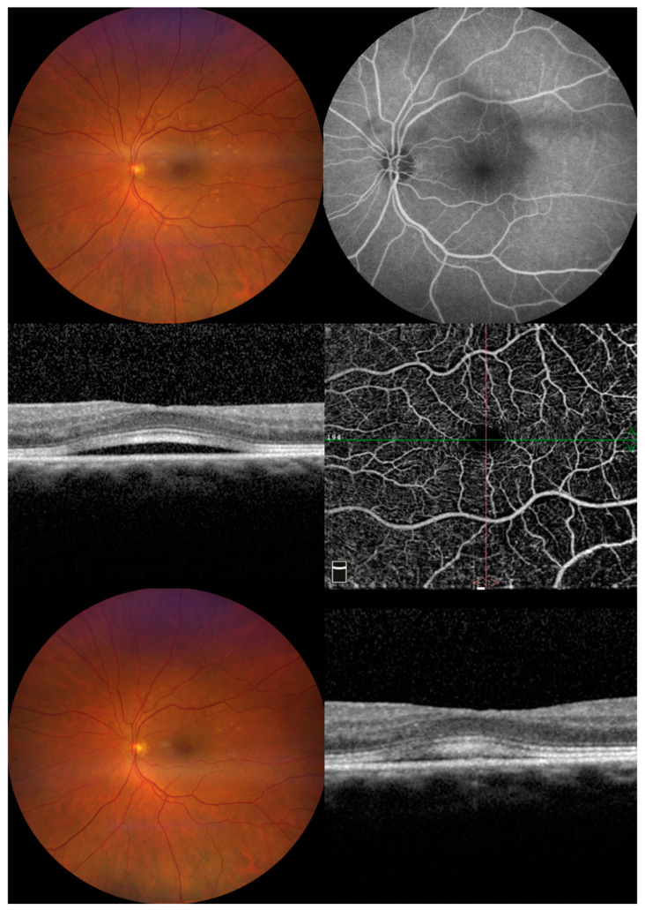
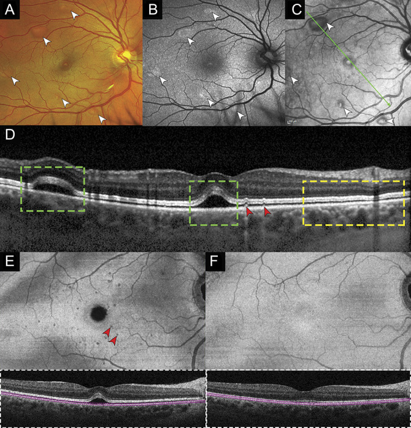
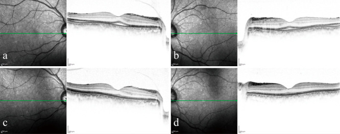
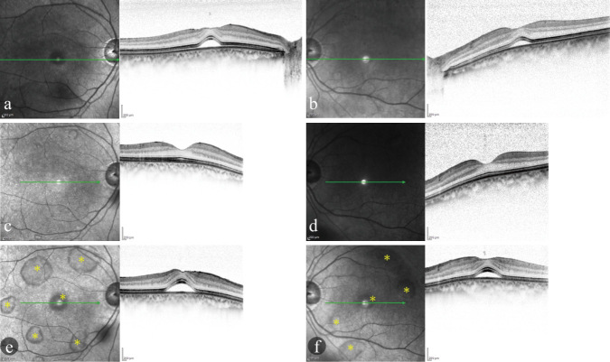

3242 — Bệnh võng mạc do thuốc ức chế MEK (MEKAR/RPED): "HAI BÊN – DỊCH DƯỚI VÕNG MẠC – FA KHÔNG RỈ – TỰ KHỎI" / MEK inhibitor–associated retinopathy
Tags: pattern:bong-thanh-dich-vong-mac pattern:dich-duoi-vong-mac pattern:bong-rpe pattern:hai-ben pattern:khong-ri-fa vung:mat vung:vong-mac vung:hoang-diem protocol:OCT-hoang-diem protocol:FA protocol:OCT-A protocol:EOG protocol:do-thi-luc score:CTCAE incidentaloma:khong
Mức chắc chắn (certainty): tổng hợp y văn (literature synthesis) — dựng từ tổng quan lớp thuốc 2024 (PMC11067803), loạt ca BEACON 2025 có ảnh OCT theo ngày (PMC12574812), nghiên cứu tiến cứu RPE/EOG 2023 (PMC9918243), báo cáo PSD trên en face OCT 2021 (PMC8078124), đoàn hệ trẻ NF1 2024 (PMC11119759), cùng các tổng quan độc tính võng mạc (PMC8688906, PMC5601686, PMC13023833). Nhóm không có bệnh nhân của mình; chỗ chưa đủ chắc ghi "chưa rõ". Không ghi tên tác giả — attribution dùng tạp chí + năm + PMCID/PMID, đối chiếu Europe PMC ngày 2026-11-20.
Câu chốt: bệnh nhân ung thư đang dùng thuốc ức chế MEK (binimetinib, trametinib, cobimetinib, selumetinib) đến với nhìn mờ, chớp sáng, quầng màu hoặc "nhìn như có giọt nước" — thường HAI bên, xuất hiện vài ngày đến vài tuần sau khởi trị. OCT hoàng điểm cho thấy dịch dưới võng mạc thần kinh, giữa RPE và dải interdigitation zone, nhiều ổ, ± bong biểu mô sắc tố (RPED); FA KHÔNG rỉ và OCT-A không có màng tân mạch. Đây là MEKAR (MEK inhibitor–associated retinopathy) — phần lớn tự khỏi và không được ngừng thuốc ung thư vĩnh viễn. Bốn con số phải nhớ: (a) tần suất — tới 90% nếu chủ động khám mắt định kỳ, nhưng chỉ ~13% có triệu chứng trong coBRIM (PMC11067803); (b) thời điểm — 73% biến cố trong 7 ngày đầu, hơn nửa trong 2 ngày (PMC12574812); (c) hồi phục — COLUMBUS: 82% khỏi, 3% đang hồi phục, 0 ca phải ngừng thuốc vì bong thanh dịch (PMC11067803); (d) bẫy — RVO 0,5% (so với 0,1% dân số chung) là biến cố phải ngừng vĩnh viễn, và anti-VEGF không dùng cho MEKAR khi chưa có CNV.
1. Tổng quan bệnh học – cơ chế hình ảnh (TẠI SAO)
1.1 MEKAR là bệnh của BƠM RPE, không phải bệnh của mạch máu
- Thuốc ức chế MEK1/2 chặn MAPK/ERK — con đường nằm dưới FGFR trong biểu mô sắc tố võng mạc (RPE). FGFR ở RPE không phải "để mọc mạch" mà để duy trì sống, sửa chữa và vận chuyển nước–ion qua lớp tế bào có junctional complex chặt nhất cơ thể.
- Khi MEK bị chặn: bơm nước transepithelial của RPE suy → dịch tích giữa RPE và lớp đoạn ngoài tế bào cảm quang (interdigitation zone – IZ); đồng thời tính thấm RPE tăng do rối loạn aquaporin 1 (AQP1) và có thể do phá vỡ hàng rào máu–võng mạc (PMC11067803).
- Vì sao dịch nằm DƯỚI võng mạc chứ không trong võng mạc: tổn thương ở mặt bơm RPE, không ở mao mạch võng mạc. Dịch thoát ra khoang dưới võng mạc — nơi có lực dính RPE–tế bào cảm quang yếu hơn và không có mao mạch. Vì thế OCT thấy khoang trống quang học (hyporeflective) giữa RPE và IZ, võng mạc thần kinh còn nguyên, không có nang trong võng mạc (khác phù hoàng điểm dạng nang).
- Vì sao HAI bên và nhiều ổ: thuốc tác động toàn thân, RPE là lớp liên tục toàn võng mạc; tổn thương không theo lãnh thổ mạch như tắc mạch hay CNV. Nghiên cứu tiến cứu 35 bệnh nhân: 77% bệnh nhân melanoma da và 60% melanoma hắc mạc có dịch dưới võng mạc trên OCT; 85% có tổn thương ở hoàng điểm (PMC11067803).
- Vì sao phần lớn KHÔNG triệu chứng: dịch ngoài hoàng điểm không làm mờ thị lực trung tâm; dịch ở hoàng điểm nhưng mỏng, tự tiêu nhanh chỉ gây chớp sáng/quầng thoáng qua. Ca báo cáo cho thấy dịch có thể tiêu trong 6 giờ và tái lập — giải thích vì sao bệnh nhân "lúc mờ lúc rõ" và vì sao một OCT bình thường sau đó không loại trừ (PMC8078124).
1.2 Bằng chứng chức năng: EOG — "điện tâm đồ của RPE"
- Điện thế đứng của mắt (electro-oculogram – EOG) phản ánh điện thế đứng của RPE; tỷ lệ light peak : dark trough (Arden ratio) bình thường ≥ 1,8. Trong MEKAR, tỷ lệ này tụt ngay trong 2 tuần — ca có ảnh: 3,5 → 1,8 (giảm 49%); 11/15 mắt của 8 bệnh nhân có EOG dưới chuẩn sau 2 tuần, dù FA không rỉ và OCT-A không đổi (PMC9918243).
- Đây là chốt cơ chế: nếu là bệnh mạch máu (CNV, CSCR), FA phải rỉ và hắc mạc phải dày/giãn mạch. Ở MEKAR, FA không rỉ, hắc mạc không dày, nhưng EOG bất thường toàn võng mạc → tổn thương là chức năng bơm RPE lan tỏa, không phải exudation từ mạch.
- Vì sao FA không rỉ: fluorescein gắn protein, không qua được junction RPE còn kín; dịch hình thành do bơm nước hỏng chứ không do thoát huyết tương. Vì thế chỉ thấy pooling trong RPED (thuốc vào khoang bong RPE), không có leakage vào khoang dưới võng mạc.
- OCT-A không thấy CNV là điều kiện để không tiêm anti-VEGF. Trong nghiên cứu tiến cứu, mật độ mạch hắc mạc không khác trước–sau (p = 0,798 và 0,308) (PMC9918243).
1.3 Vì sao có RPED và "punctate subretinal deposits"
- RPED (retinal pigment epithelial detachment): bong cả lớp RPE khỏi màng Bruch do dịch tích dưới RPE; trên OCT là vòm tăng phản xạ, đồng nhất, bên dưới trống quang học; trên FA là pooling (thuốc đọng trong vòm), không rỉ ra ngoài. Tổng quan ghi RPED gặp thường hơn và là một phần phổ MEKAR (PMC11067803).
- Punctate subretinal deposits (PSD): các chấm giảm phản xạ nhỏ ở lớp RPE trên en face OCT, đẩy ellipsoid zone/IZ ra trước, có đuôi tăng truyền sáng phía sau; chúng dao động cùng dịch và thoái triển sau 6 giờ — gợi ý tổn thương RPE khu trú, hồi phục (PMC8078124).
- Hai kiểu dịch: "dome" (vòm khu trú, thường trên RPED) và "splitting" (dải dịch thấp, lan rộng giữa RPE và IZ). Kiểu splitting dễ bị đọc nhầm là bình thường nếu chỉ nhìn một lát cắt.
1.4 Vì sao khởi phát sớm nhưng có thể muộn — và vì sao tần suất dao động 0,9–90%
- Sớm: thuốc đạt nồng độ ổn định trong vài giờ–vài ngày; RPE là mô tiếp xúc trực tiếp với máu hắc mạc nên tổn thương xuất hiện trước khi có triệu chứng. Loạt BEACON: khởi phát ngày 2, 2 và 4; dữ liệu hậu mãi Nhật ghi 73% trong 7 ngày đầu, hơn nửa trong 2 ngày (PMC12574812).
- Muộn vẫn có: phù hoàng điểm dạng nang 8 tháng, viêm màng bồ đào 3 tháng, phù đĩa thị sau nhiều năm dabrafenib/trametinib (PMC11067803, PMID 31906779). Vì thế không được đóng khung "chỉ xảy ra tuần đầu".
- Tần suất khác nhau vì cách phát hiện, không phải vì sinh học khác:
- 0,9% — thử nghiệm BEACON (chỉ ghi biến cố có triệu chứng/được khám).
- 2,9% — khảo sát hậu mãi Nhật.
- 13,7% — ANCHOR; 20% — COLUMBUS (bong thanh dịch); 40,6% — COLUMBUS theo một cách ghi nhận khác.
- 77–90% — khi chủ động OCT định kỳ ở mọi bệnh nhân (PMC11067803, PMC12574812).
- Bài học: "incidence" trong thử nghiệm là tần suất phát hiện, không phải tần suất bệnh. Đừng trích 0,9% để nói MEKAR hiếm.
1.5 Bảng số phải nhớ
| Chỉ số | Giá trị | Nguồn |
|---|---|---|
| MEKAR khi sàng lọc OCT chủ động | tới 90%; phần lớn không triệu chứng | PMC11067803 |
| coBRIM (cobimetinib + vemurafenib, n = 247) | 29% (72/247) có bệnh võng mạc; 13% (33) có triệu chứng; 86 đợt dịch/69 bệnh nhân | PMC11067803 |
| COLUMBUS (encorafenib + binimetinib, n = 192) | bong thanh dịch 20%; 87% độ 1–2; 11 ca ngắt/giảm liều; 82% khỏi, 3% đang hồi phục; 0 ca ngừng thuốc | PMC11067803 |
| Nghiên cứu tiến cứu 35 bệnh nhân | dịch dưới võng mạc 77% (melanoma da) / 60% (melanoma hắc mạc); 85% ở hoàng điểm | PMC11067803 |
| Loạt 32 bệnh nhân | độ 1–2: 13/20 đơn trị binimetinib, 6/12 phối hợp | PMC11067803 |
| SPRINT (selumetinib, 74 trẻ NF1) | biến cố mắt 15%; 82% khỏi | PMC11067803 |
| BEACON (thử nghiệm) so với loạt tại viện | 0,9% so với 3/3 bệnh nhân triplet | PMC12574812 |
| Khởi phát | 73% trong 7 ngày; hơn nửa trong 2 ngày; ca ngày 2–4 | PMC12574812 |
| Hồi phục | thường 1–vài tuần; ca dịch tiêu sau 6 giờ | PMC11067803, PMC8078124 |
| RVO | 0,5% (dân số chung 0,1%) — ngừng vĩnh viễn nếu xác nhận | PMC11067803 |
| EOG light peak : dark trough | 3,5 → 1,8 (−49%) sau 2 tuần; 11/15 mắt dưới chuẩn | PMC9918243 |
| Trẻ NF1 (26 bệnh nhân, 13 tuổi) | 0 ca MEKAR trong 413 ngày; 15% khô mắt | PMC11119759 |
| Tiền sử viêm/nhiễm/kích thích mắt | 4/5 bệnh nhân phát triển bệnh võng mạc có triệu chứng | PMC11067803 |
2. Mẫu hình + chẩn đoán phân biệt theo vị trí (gamut)
2.1 Mẫu hình trung tâm: dịch dưới võng mạc HAI BÊN, nhiều ổ
- Hoàng điểm: MEKAR, CSCR (thường một bên), CNV (một bên, kèm máu/xuất tiết), VKH (hai bên + viêm), di căn hắc mạc (dày hắc mạc dạng gồ), bệnh võng mạc tăng huyết áp ác tính (đốm bông, hẹp mạch).
- Ngoài hoàng điểm / nhiều ổ: MEKAR (rất hay gặp), lymphoma nội nhãn, bệnh do thuốc khác, bong thanh dịch do thẩm phân/ghép tế bào gốc.
- Quanh đĩa thị: phù đĩa thị/IIH, MEKAR + phù đĩa (hiếm, báo cáo ca), neuroretinitis, PPS (pachychoroid quanh đĩa).
2.2 Mẫu hình theo tổn thương RPE
- RPED nhiều ổ hai bên: MEKAR, CSCR mạn, bệnh trung tâm thanh dịch do thuốc (steroid, MEK), drusen lớn/PED lành tính (đối xứng, ổn định nhiều năm).
- RPED đơn độc + dịch: CNV ẩn (OCT-A có mạng tân mạch, FA rỉ), PED do tuổi, u hắc mạc thể phẳng (siêu âm dày, không có "dome" đơn thuần).
2.3 Mẫu hình trong võng mạc (khác MEKAR)
- Nang trong võng mạc + dày võng mạc: phù hoàng điểm do đái tháo đường, RVO, viêm màng bồ đào, Irvine–Gass sau mổ, hoặc phù hoàng điểm do MEK (hiếm, thường kèm viêm).
- Xuất huyết theo vùng: RVO (chặn bởi đường ngang, giãn tĩnh mạch), CNV (dưới võng mạc), bệnh võng mạc đái tháo đường.
2.4 Mnemonic MEKAR
Multifocal bilateral — Early (ngày–tuần) — Klear FA (không rỉ) — Asymptomatic thường gặp — Reversible.
3. Bảng so sánh phân biệt (ma trận đối chiếu)
| Thực thể (entity) | Hình ảnh điển hình (OCT/FA/US) | Chốt vào (rule-in) | Chốt loại (rule-out) | Gợi ý xác nhận |
|---|---|---|---|---|
| MEKAR | Dịch dưới võng mạc giữa RPE và IZ, hai bên, nhiều ổ; dome hoặc splitting; ± RPED; FA không rỉ; OCT-A không CNV | Đang dùng MEK inhibitor + hai bên + nhiều ổ + FA không rỉ + tự khỏi/dao động | FA rỉ, OCT-A có CNV, xuất huyết/xuất tiết, một bên cố định → không phải MEKAR | OCT hoàng điểm + FA + OCT-A; EOG nếu cần; ngừng thử thuốc |
| CSCR | Dịch dưới võng mạc một bên (80–90%), hắc mạc dày (pachychoroid), FA rỉ kiểu inkblot/smokestack, FAF tăng | Một bên + FA rỉ + hắc mạc dày + tiền sử steroid/căng thẳng | Hai bên, nhiều ổ, FA không rỉ, đang dùng MEK → nghi MEKAR | FA, OCT-A, OCT hắc mạc |
| CNV / thoái hóa hoàng điểm xuất tiết | Dịch dưới RPE và/hoặc dưới võng mạc, máu/xuất tiết, FA rỉ, OCT-A có mạng tân mạch | FA rỉ + OCT-A CNV + xuất huyết/xuất tiết | FA không rỉ + OCT-A sạch + hai bên đối xứng → không CNV | FA + OCT-A; anti-VEGF nếu CNV |
| Phù đĩa thị / IIH | Đĩa phù hai bên, RNFL dày, dịch quanh đĩa, đầu đau, điểm mù lớn | Đĩa phù + RNFL dày + đau đầu/ù tai + áp lực mở cao | Đĩa bình thường, RNFL không dày, không đau đầu → không phù đĩa | Soi đáy + OCT RNFL + MRI/CSF |
| Viêm màng bồ đào do thuốc (BRAF/MEK) | Tế bào/flare tiền phòng, KP, dính mống mắt, đau–sợ ánh sáng; có thể CME | Viêm tiền phòng + đau + tế bào tiền phòng | Không tế bào, không đau, chỉ dịch dưới võng mạc → MEKAR thuần | Đèn khe; corticoid tại chỗ |
| RVO (CRVO/BRVO) | Xuất huyết theo vùng, tĩnh mạch giãn–ngoằn ngoèo, phù hoàng điểm, FA rỉ muộn | Xuất huyết + giãn tĩnh mạch + phù hoàng điểm | Không xuất huyết, tĩnh mạch bình thường → không RVO | Soi đáy, FA; ngừng MEK vĩnh viễn |
| Di căn hắc mạc / u hắc mạc | Dày hắc mạc dạng gồ, bờ không đều, siêu âm dày > 2 mm, có thể dịch dưới võng mạc | Tiền sử ung thư + khối hắc mạc dày + siêu âm | Hắc mạc mỏng, đối xứng, không khối → không di căn | Siêu âm B-scan, OCT hắc mạc, MRI |

Bệnh nhân MEKAR sau 2 tuần điều trị: ảnh màu nhiều bong RPE ở hậu cực (trên trái); FAG không rỉ vùng hoàng điểm, chỉ pooling trong các RPED (trên phải); OCT có bong thanh dịch thần kinh–võng mạc hoàng điểm, dày/tăng phản xạ dải interdigitation zone, không dày hắc mạc (giữa trái); OCT-A không đổi (giữa phải); sau 4 tuần giảm dịch (dưới). Nguồn: J Clin Med 2023 (PMC9918243), CC BY 4.0; ảnh nguyên bản, không crop.
Ba dấu hiệu "chốt" trên hình ảnh
- Dịch dưới võng mạc, KHÔNG trong võng mạc: khoang giảm phản xạ giữa RPE và IZ, võng mạc thần kinh phía trên mỏng nhưng liên tục, không nang trong võng mạc.
- FA không rỉ: chỉ pooling trong RPED; không leakage vào khoang dưới võng mạc. Đây là điểm loại CSCR/CNV mạnh nhất.
- Hai bên + nhiều ổ + dao động: tổn thương đối xứng, thay đổi trong vài giờ–vài tuần, không theo lãnh thổ mạch.

MEKAR sau encorafenib + binimetinib: ảnh màu siêu rộng có vùng vàng–cam gồ (A), FAF tăng (B), NIR giảm phản xạ (C); OCT B-scan có dịch kiểu dome và splitting cùng punctate subretinal deposits (D); en face OCT tại lớp RPE: chấm giảm phản xạ (E); sau 6 giờ dịch tiêu và PSD thoái triển (F). Nguồn: Retina 2021 (PMC8078124), CC BY-NC-ND 4.0; ảnh nguyên bản, không crop.
4. Protocol chụp + hệ phân độ/điểm chuẩn hóa
4.1 Trước khi bắt đầu thuốc (baseline)
- Thị lực có chỉnh kính (BCVA), đèn khe (tế bào/flare, KP), nhãn áp, soi đáy giãn đồng tử.
- OCT hoàng điểm (khối 3D hoặc lát cắt qua hoàng điểm) — để phân biệt bệnh có sẵn (drusen, ERM, CSCR cũ) với MEKAR về sau.
- OCT RNFL nếu nghi phù đĩa thị; chụp màu/FAF nếu có tổn thương sắc tố.
- Không bắt buộc EOG/FA/OCT-A thường quy; làm khi chẩn đoán chưa rõ hoặc nghi CNV.
4.2 Theo dõi trong điều trị
- Không có khuyến cáo sàng lọc mắt thường quy cho mọi bệnh nhân (PMC11067803). Tuy nhiên:
- Mọi bệnh nhân có triệu chứng thị giác → khám mắt trong 24–48 giờ, không chờ lịch hẹn ung thư.
- Nhóm nguy cơ cao (tiền sử viêm/nhiễm/kích thích mắt, bệnh hoàng điểm/võng mạc nền) → khám định kỳ; trong coBRIM, 4/5 bệnh nhân có tiền sử viêm mắt phát triển bệnh võng mạc có triệu chứng (PMC11067803).
- Quy trình thực hành của loạt BEACON (PMC12574812): điện thoại do dược sĩ ngày 2–4 hỏi triệu chứng mắt; khám mắt trong 8 ngày; sau khi có SRD, khám mỗi 2 tuần đến khi ổn định.
- Khi đã có MEKAR: OCT lặp lại 2–4 tuần (hoặc sớm hơn nếu triệu chứng tăng); FA/OCT-A nếu nghi CNV; EOG nếu cần bằng chứng chức năng RPE.
4.3 Phân độ và xử trí (theo triệu chứng; CTCAE 4.0 không có mục riêng cho "serous retinopathy")
| Độ | Triệu chứng | Xử trí | Theo dõi |
|---|---|---|---|
| 1 | Không triệu chứng, chỉ thấy dịch trên OCT | Tiếp tục thuốc | OCT lại 4 tuần |
| 2 | Mờ nhẹ, thoáng qua, không ảnh hưởng sinh hoạt | Tiếp tục thuốc | OCT lại 2–4 tuần, sớm hơn nếu nặng lên |
| 3 | Mờ kéo dài, ảnh hưởng sinh hoạt | Cân nhắc giảm liều/ngắt thuốc; dùng lại sau khi dịch tiêu | OCT 1–2 tuần; hội chẩn ung thư–mắt |
| 4 | Mờ nặng, ảnh hưởng nghiêm trọng | Thử ngừng thuốc, xử lý nguyên nhân khác; dùng lại sau khi hồi phục | Theo dõi sát, cá thể hóa |
| RVO | Xuất huyết võng mạc theo vùng, giãn tĩnh mạch | Ngừng MEK VĨNH VIỄN nếu xác nhận | Khám mắt + FA; xử lý phù hoàng điểm |
flowchart TD
A[Bệnh nhân đang dùng thuốc ức chế MEK] --> B{Có triệu chứng thị giác?}
B -->|Không| C[OCT hoàng điểm nếu có sàng lọc; theo dõi 4 tuần khi thấy dịch]
B -->|Có| D[Khám mắt trong 24 đến 48 giờ: thị lực, đèn khe, soi đáy, OCT hoàng điểm]
D --> E{Có dịch dưới võng mạc?}
E -->|Không| F[Tìm nguyên nhân khác: CNV, RVO, viêm, phù đĩa thị]
E -->|Có| G{FA có rỉ hoặc OCT-A có CNV?}
G -->|Có| H[Xử lý CNV hoặc nguyên nhân mạch máu; không gọi là MEKAR]
G -->|Không| I[MEKAR: phân độ theo triệu chứng]
I --> J{Độ 1 đến 2?}
J -->|Có| K[Tiếp tục thuốc; OCT lại 2 đến 4 tuần]
J -->|Không| L[Giảm liều hoặc ngừng tạm; dùng lại sau khi dịch tiêu]
K --> M[Theo dõi đến khi ổn định]
L --> M
4.4 Liều thuốc và điểm cần nhớ
| Thuốc | Liều thường dùng | Ghi chú mắt |
|---|---|---|
| Binimetinib | 45 mg uống 2 lần/ngày | Tần suất MEKAR cao nhất trong nhóm có dữ liệu OCT chủ động (20–77%) |
| Cobimetinib | 60 mg/ngày, 21 ngày uống/7 ngày nghỉ | coBRIM: 29% bệnh võng mạc, 13% triệu chứng |
| Trametinib | 2 mg/ngày | Tần suất MEKAR chưa biết vì thử nghiệm đăng ký không khám mắt thường quy |
| Selumetinib | 25 mg/m² uống 2 lần/ngày (trẻ NF1) | SPRINT: biến cố mắt 15%, 82% khỏi |
- Không dùng anti-VEGF cho MEKAR khi không có CNV: dịch do bơm RPE, không phải do VEGF; anti-VEGF không sửa được bơm và có thể gây biến chứng.
- Corticoid tại chỗ chỉ dành cho viêm màng bồ đào/CME viêm, không phải MEKAR thuần.
- RVO là ngoại lệ: ngừng vĩnh viễn theo nhãn thuốc (PMC11067803).
5. Biến thể bình thường và cạm bẫy
- MEKAR không triệu chứng dễ bị bỏ: nếu không OCT, bệnh nhân chỉ được ghi "khám mắt bình thường". Trong nghiên cứu tiến cứu, 77% bệnh nhân melanoma da có dịch dưới võng mạc nhưng phần lớn không phàn nàn (PMC11067803).
- OCT bình thường sau cơn mờ không loại trừ: dịch có thể tiêu trong 6 giờ rồi tái lập (PMC8078124). Hỏi kỹ thời điểm và chụp lại khi có triệu chứng.
- Đừng dán nhãn "CSCR": CSCR một bên, FA rỉ, hắc mạc dày; MEKAR hai bên, FA không rỉ, hắc mạc không dày. Dán nhãn CSCR dẫn tới ngừng thuốc ung thư oan hoặc laser/PDT không cần thiết.
- Đừng tiêm anti-VEGF: chỉ khi OCT-A có CNV. RPED đơn thuần không phải chỉ định anti-VEGF.
- Đừng neo vào "phù đĩa thị/IIH": bệnh nhân ung thư có đau đầu + đĩa phù dễ bị gọi IIH; nhưng dịch dưới võng mạc hai bên + đang dùng MEK phải nghĩ MEKAR. Phù đĩa thị do MEK có báo cáo ca nhưng không phổ biến (PMID 31906779).
- Dịch trong võng mạc ≠ dịch dưới võng mạc: nang trong võng mạc gợi đái tháo đường/RVO/viêm; MEKAR là dịch dưới võng mạc.
- RPED vs CNV: RPED không rỉ, OCT-A sạch; CNV rỉ, có mạng tân mạch. Đừng điều trị CNV khi chỉ có RPED.
- Khởi phát muộn vẫn có: phù hoàng điểm 8 tháng, viêm 3 tháng, phù đĩa thị sau nhiều năm — không được nói "quá 1 tháng là không do thuốc".
- Trẻ em không miễn nhiễm: đoàn hệ NF1 0/26 nhưng có báo cáo ca MEKAR ở trẻ (PMC9164750); không dùng "trẻ ít gặp" để bỏ qua triệu chứng.
- Bệnh nhân melanoma hắc mạc: dịch dưới võng mạc có thể do di căn hắc mạc hoặc u tiến triển, không chỉ MEKAR; siêu âm B-scan và so sánh với ảnh cũ.
- Biến thể bình thường dễ nhầm: drusen mềm/PED lành tính đối xứng, ổn định nhiều năm, không dịch; ERM gây nhăn võng mạc nhưng không có khoang dịch dưới võng mạc; dịch kính đục không tạo khoang dưới võng mạc.
6. Tự lượng giá — Blind Quiz
Ca 1 — Nữ 70 tuổi, ung thư đại tràng BRAF V600E, ngày thứ 3 của phác đồ ba thuốc có binimetinib. Bệnh nhân thấy "quả bóng màu be" chớp qua mắt. Nhìn ảnh OCT, mô tả trước khi mở đáp án.

- Câu hỏi: Dịch nằm ở đâu? Một bên hay hai bên? Có cần ngừng cả ba thuốc không? Điều gì quyết định chẩn đoán?
Bấm để hiện đáp án (findings + chẩn đoán)
- Findings: (a, b) ngày 3 — bong thanh dịch thần kinh–võng mạc (SRD) hai bên, khoang giảm phản xạ giữa RPE và võng mạc thần kinh; (c, d) ngày 8 — dịch tiêu gần hoàn toàn sau khi ngừng 1 tuần.
- Chẩn đoán: MEKAR do binimetinib, độ 2 theo triệu chứng.
- Xử trí: ngắt encorafenib + binimetinib 1 tuần (theo hướng dẫn nhà sản xuất), dịch tiêu; sau đó bệnh nhân tiếp tục doublet không có binimetinib. Không cần corticoid, không anti-VEGF.
- Vì sao không phải CSCR: hai bên, nhiều ổ, khởi phát ngày 3 sau thuốc, tự khỏi nhanh; CSCR thường một bên và FA rỉ.
- Nguồn ảnh: J Anus Rectum Colon 2025 (PMC12574812), CC BY-NC-ND 4.0.
Ca 2 — Nam 51 tuổi, ung thư đại tràng BRAF V600E, ngày thứ 4 của binimetinib, khó đọc báo. OCT ngày 4, ngày 11 và sau khi dùng lại thuốc.

- Câu hỏi: Vì sao dịch tái phát dù đã hết? Có nên ngừng vĩnh viễn binimetinib? Chiến lược nào giữ được thuốc ung thư?
Bấm để hiện đáp án (findings + chẩn đoán)
- Findings: (a, b) ngày 4 — SRD hai bên; (c, d) ngày 11 — tiêu hết sau ngừng binimetinib; (e, f) 7 ngày sau dùng lại — tái phát SRD (dấu hoa thị vàng).
- Chẩn đoán: MEKAR tái phát sau thử lại (rechallenge) — hiện tượng phụ thuộc liều/nồng độ, không phải thất bại điều trị hay bệnh mới.
- Xử trí: giảm liều rồi dùng theo nhịp 1 tuần uống/1 tuần nghỉ, các thuốc khác tiếp tục; theo dõi OCT mỗi 2 tuần đến khi ổn định. Không ngừng vĩnh viễn vì MEKAR.
- Bài học: dùng lại có thể tái phát; cần kế hoạch giảm liều/ngắt nhịp thay vì bỏ thuốc. Chiến lược 1 tuần uống/1 tuần nghỉ là kinh nghiệm loạt ca, chưa có RCT (PMC12574812).
- Nguồn ảnh: J Anus Rectum Colon 2025 (PMC12574812), CC BY-NC-ND 4.0.
Ca 3 — Nam 42 tuổi, melanoma da di căn, đang encorafenib + binimetinib, không phàn nàn thị lực. Ảnh chụp vì lịch khám nghiên cứu.
- Câu hỏi: Tổn thương vàng–cam là gì? Vì sao FA không rỉ mà vẫn có dịch? Dấu hiệu nào trên en face OCT giúp hiểu cơ chế?
Bấm để hiện đáp án (findings + chẩn đoán)
- Findings: vùng vàng–cam gồ ở hậu cực và dọc arcade (A), tăng huỳnh quang trên FAF (B), giảm phản xạ trên NIR (C); OCT có dome và splitting (D); en face OCT tại RPE: punctate subretinal deposits giảm phản xạ (E); sau 6 giờ dịch tiêu, PSD thoái triển (F).
- Chẩn đoán: MEKAR không triệu chứng — tổn thương RPE khu trú, dịch dưới võng mạc dao động rất nhanh.
- Vì sao FA không rỉ: dịch do bơm RPE suy, không do thoát huyết tương; FA chỉ pooling trong RPED.
- Xử trí: tiếp tục thuốc, theo dõi OCT; không can thiệp.
- Nguồn ảnh: Retina 2021 (PMC8078124), CC BY-NC-ND 4.0.
7. Câu hỏi nghiên cứu & điểm chưa đồng thuận (tính đến 11/2026)
[Tranh cãi] Ở bệnh nhân MEKAR không triệu chứng, tiếp tục MEK inhibitor có làm tăng nguy cơ mất thị lực lâu dài so với ngừng/giảm liều không?
- Đã biết: COLUMBUS: 82% khỏi, 3% đang hồi phục, 0 ca ngừng thuốc vì bong thanh dịch; nghiên cứu tiến cứu cho thấy dịch dao động và tự tiêu dù tiếp tục thuốc (PMC11067803, PMC8078124).
- Chưa rõ: tổn thương RPE tích lũy sau nhiều đợt, ngưỡng dịch/thời gian nên can thiệp, và khác biệt giữa binimetinib với trametinib.
- Hướng nghiên cứu: đoàn hệ tiền cứu với OCT định lượng (thể tích dịch, chiều cao SRF, EOG) và thị lực 1–2 năm, phân tầng theo quyết định tiếp tục/ngắt thuốc.
- Nguồn: PMC11067803 (2024); PMC8078124 (2021).
[Khoảng trống] Tần suất thật của MEKAR với trametinib và ở trẻ em là bao nhiêu?
- Đã biết: trametinib không có số liệu tần suất vì thử nghiệm đăng ký không khám mắt thường quy; đoàn hệ 26 trẻ NF1 có 0 ca MEKAR trong 413 ngày, nhưng có báo cáo ca MEKAR ở trẻ u đường thị (PMC11067803, PMC11119759, PMC9164750).
- Chưa rõ: tỷ lệ theo tuổi/liều, yếu tố nguy cơ ở trẻ, và giá trị của sàng lọc OCT ở quần thể nhi.
- Hướng nghiên cứu: đoàn hệ nhi tiền cứu với OCT nền + định kỳ, báo cáo tần suất, thời điểm, hồi phục theo từng thuốc và liều.
- Nguồn: PMC11067803 (2024); PMC11119759 (2024); PMC9164750 (2022).
[Khác biệt thực hành] Có nên OCT nền và sàng lọc định kỳ cho MỌI bệnh nhân dùng MEK inhibitor, hay chỉ khám khi có triệu chứng?
- Đã biết: hiện không có khuyến cáo sàng lọc thường quy; OCT nền giúp phân biệt bệnh có sẵn; khám chủ động trong thử nghiệm phát hiện tới 90%, còn thử nghiệm BEACON chỉ ghi 0,9% (PMC11067803, PMC12574812).
- Chưa rõ: chi phí–hiệu quả, lịch tối ưu (ngày 2–4, tuần 1, tuần 4), và ai là nhóm nguy cơ cao đủ để sàng lọc.
- Hướng nghiên cứu: nghiên cứu triển khai so sánh sàng lọc chủ động vs khám theo triệu chứng, outcome tỷ lệ phát hiện, mất thị lực, thời gian gián đoạn thuốc, chi phí.
- Nguồn: PMC11067803 (2024); PMC12574812 (2025).
Bài liên quan chéo
- 3240 – Viêm thần kinh thị do thuốc ức chế miễn dịch (ICI-ON) — cùng mô hình "thuốc ung thư – mắt", khác cơ chế (tự miễn vs độc RPE).
- 1479 – Bong võng mạc thanh dịch — tiếp cận dịch dưới võng mạc không có lỗ rách.
- 405 – Pachychoroid quanh đĩa thị/PPS — dịch quanh đĩa, FA không rỉ, hắc mạc dày.
- 433 – Phù đĩa thị vs drusen — phân biệt phù đĩa thật với giả phù.
- 378 – Điều trị u đám rối NF1 bằng selumetinib — bối cảnh MEK inhibitor ở trẻ NF1.
- 448 – U hắc mạc — phân biệt dịch do u/di căn với MEKAR.
- 487 – Nhiễm độc võng mạc do thuốc khác ngoài HCQ — khung chung độc tính võng mạc do thuốc.
Ảnh
- Bốn ảnh gốc, không ảnh ghép:
images/3242_benh-vong-mac-MEK_OCT-FA_PMC9918243.jpg(CC BY 4.0),images/3242_benh-vong-mac-MEK_OCT-case1_PMC12574812.jpg(CC BY-NC-ND 4.0),images/3242_benh-vong-mac-MEK_OCT-tai-phat-case3_PMC12574812.jpg(CC BY-NC-ND 4.0),images/3242_benh-vong-mac-MEK_OCT-enface_PMC8078124.jpg(CC BY-NC-ND 4.0). Nguồn + giấy phép từng ảnh:images/CREDITS.md. - Không tải ảnh từ nguồn không rõ giấy phép; không crop/ghép ảnh CC BY-NC-ND.
Không dùng để chẩn đoán độc lập khi chưa có người hướng dẫn.